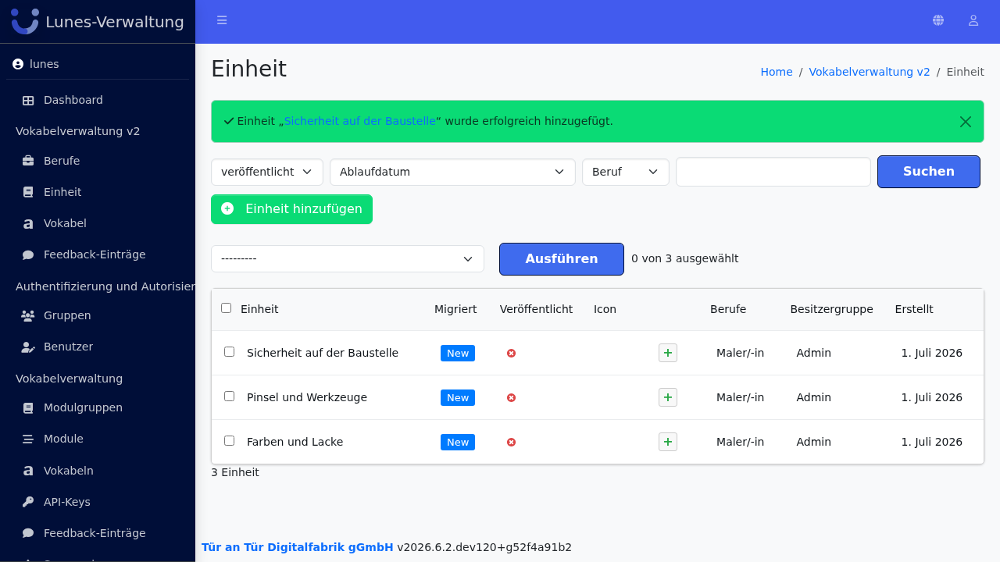
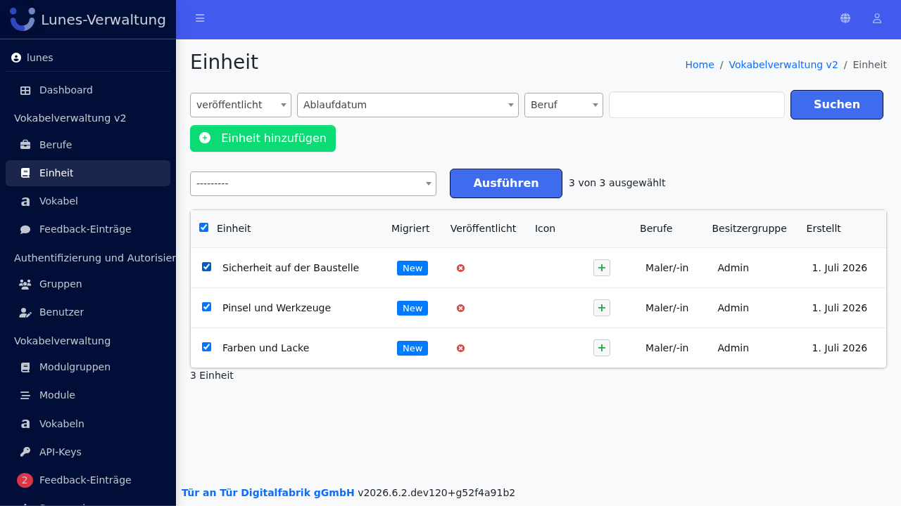
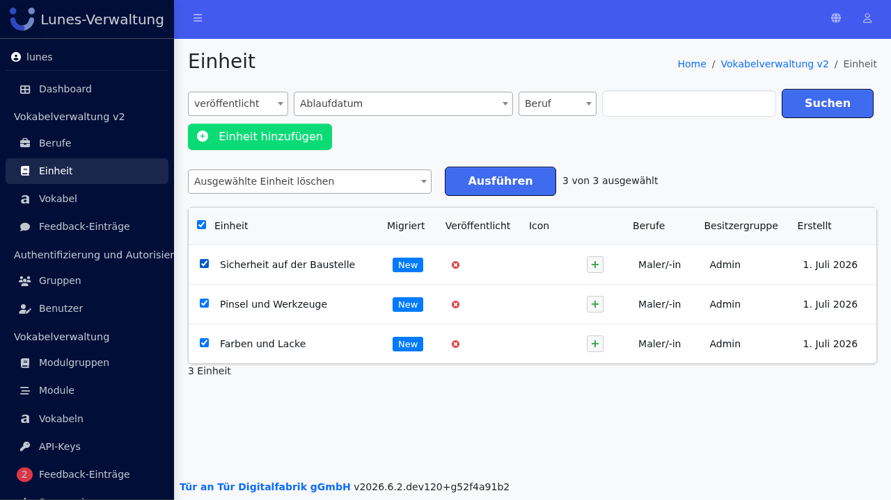
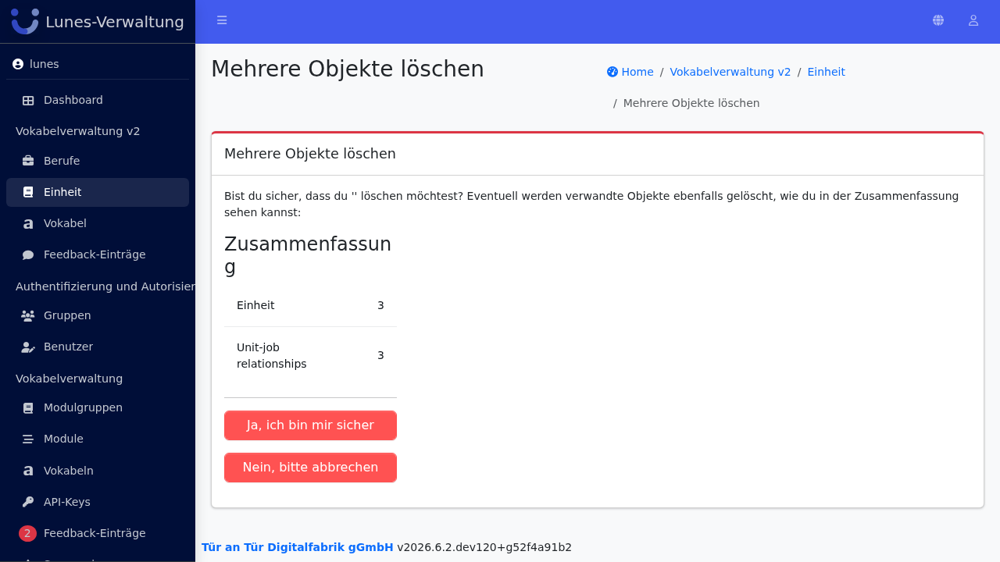
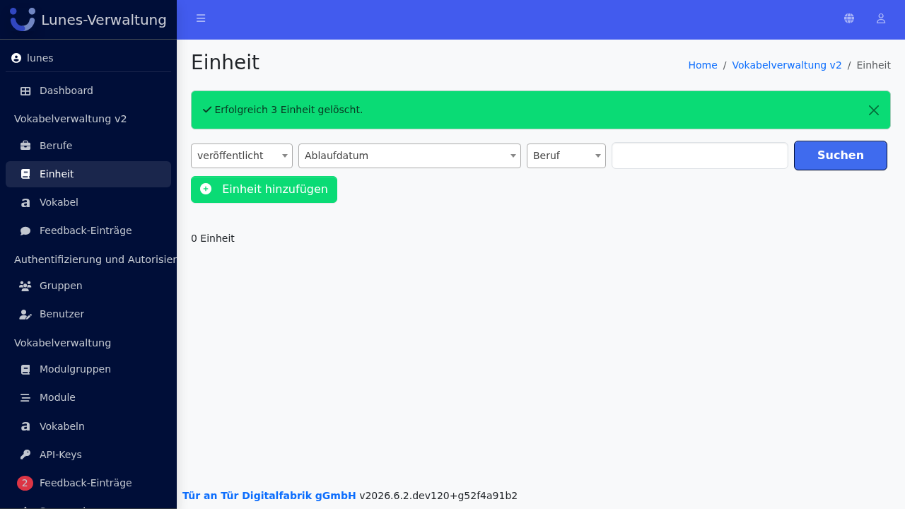

Bulk Delete Units
Schritt 1: Einheit-Bereich öffnen
Klicken Sie im linken Navigationsmenü auf Einheit.

Schritt 2: Einheiten auswählen
Aktivieren Sie die Checkboxen neben den Einheiten „Farben und Lacke", „Pinsel und Werkzeuge" und „Sicherheit auf der Baustelle".

Schritt 3: Aktion "Ausgewählte Einheit löschen" auswählen und ausführen
Wählen Sie im Aktions-Dropdown "Ausgewählte Einheit löschen" aus und klicken Sie auf „Go".

Schritt 4: Löschung bestätigen
Bestätigen Sie die Löschung mit einem Klick auf „Ja, ich bin sicher".

Schritt 5: Erfolg — Einheiten wurden gelöscht
Alle drei Einheiten sind nicht mehr in der Übersicht vorhanden.
